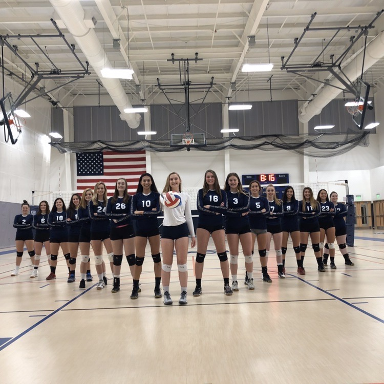
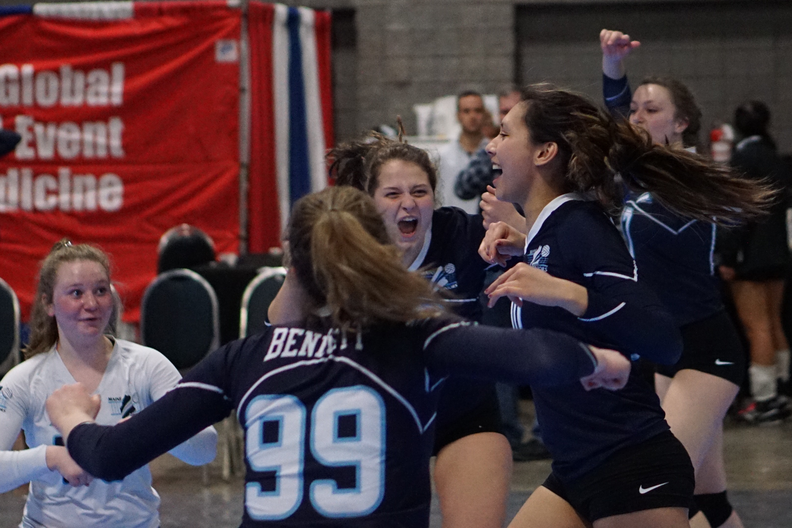

Hi, my name is Julia Pomerleau.
I play on the club volleyball team at URI, although we are not a fully established team.
This was the first year that we had a team at our school, and I participated in tryouts with
around 70 other girls. Here is our team:

Prior to this, I participated on a total of two club teams during my high school career,
as well as the high school season. The club team I took a part of was more competetive,
and we travelled around New England as well as a select few other locations in the US.
Here's me and my 17 Nationals team participating at a tournament (I am unsure where):

Although volleyball is definitely one of my favorite hobbies, throughout my childhood I
participated in numerous sports/hobbies. Here is a list, and I could be missing a few: